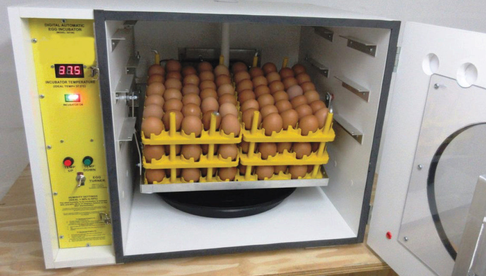

Artificial incubation and brooding
In commercial farms where a large number of birds are kept, incubation is done artificially by the use of egg incubators. Their capacity ranges from 60 to a million eggs in one machine. Figure 9.8 shows the egg incubator.

Figure 9.8: Egg incubator
Source: https://www.anklabs.com/wp-content/uploads/2018/09/Poultry-Incubator.jpg
Advantages of artificial incubation
- (a)A large number of chicks may be hatched at a time.
- (b)Sanitary measures are carried out easily.
- (c)Infertile eggs can be removed from the incubator at any stage of incubation.
- (d)Chick supply is constant.
Challenges of artificial incubation
- (a)There are high initial and running costs.
- (b)It requires skilled labour hence high labour cost.
- (c)There is a high possibility of egg contamination if the collection of eggs is from contaminated sources.
- (d)Production of chicks may stop completely due to the breakdown of machines especially where spare parts and technicians are not reliably available.
Artificial brooding:
Where a large number of chicks are to be reared at once, artificial brooding is done. This is done by keeping chicks in a structure called a brooder where feeds, water, and heat are provided. Artificial brooding starts when chicks are one